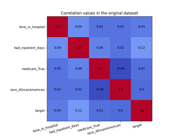

Example Notebooks#
Here’s a list of examples on how to use the library. We will be adding more examples soon. If you’re interested in contributing to existing notebooks or adding new ones please consult the guide on Contributing example notebooks.
Note
The Fairlearn API is still evolving, so if you want to run these on your local Fairlearn installation, make sure to match versions.



CorrelationRemover visualization
CorrelationRemover visualization